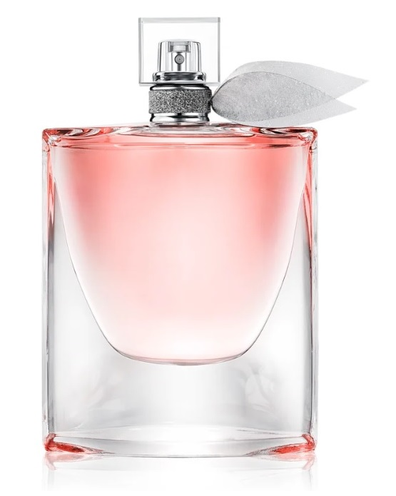
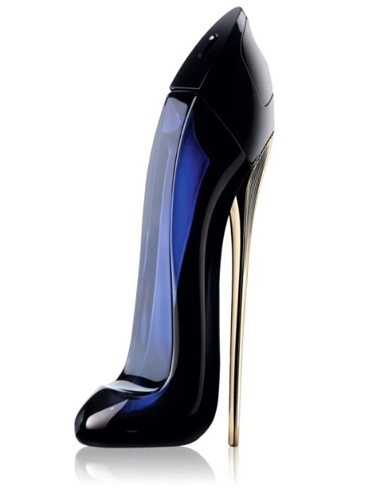
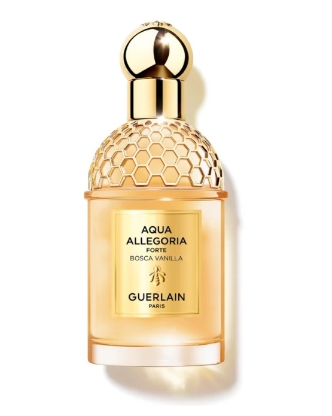

Női parfümök
| Kép | Név | Leírás | Szín | Dátum |
|---|---|---|---|---|
|  | Lancôme La Vie Est Belle |
A boldogság és a szabadság szimbóluma illat formájában-ilyen a ma már ikonikus Lancôme La Vie Est Belle női Eau de Parfum. A „tegyük szebbé a holnapot” kihívás szellemében 2022-ben újratölthetővé alakították át az üvegcséjét. Árasszon maga körül örömöt egy fenntartható megközelítésű fényűző illattal. | 2012 | |
|  | Carolina Herrera Good Girl |
Ön pontosan tisztában van azzal, hogy mikor van itt a tűsarkú és a csábos ruha, illetve a balettcipő és fodros szoknya ideje. A Carolina Herrera Good Girl Eau de Parfum mindig a megfelelő női oldalát emeli ki. Azt, amelyiket akarja. Azt, amelyikre pont szüksége van. |  |
2016 |
|  | GUERLAIN Aqua Allegoria Bosca Vanilla Forte |
Ajándékozza meg magát olyan illattal, melytől semmilyen társaságban nem maradhat észrevétlenül. A női GUERLAIN Aqua Allegoria Bosca Vanilla Forte eau de parfum a luxus és az exkluzivitás megtestesítője, és ötletes illatkompozíciója megörvendezteti még a legigényesebbeket is. | 2023 |